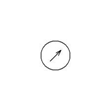

Our Process
Our design process follows a proven approach. We begin with a deep understanding of your needs and create a planning template.
1
The collecting of reqiurments is an essential first step in the software development process.it enables mathodically gathering and examining data from project teams,stakeholders,and end users to comprehend their requirments and expectations. The scope,goals,and restructions of the project are defined as a result of this process,which lays the groundwork for a succesful project execution.
2
A product,system,or software application prototype is an early version or mockup of the actual thing.It acts as a concrete illustration of the design concept,enabling stakeholders to picture and engage with the features and functionalities of the product.Before development,prototyping aids in spotting potential problems, gathering input,and improving the finished product.
3
The finished programme or system is released and made accessible to end users during the deployment step of the software development lifecycle. On production servers or devices,the software must be installed,set up,and activated.A smmoth transition from development to actual operation is ensured by proper deployment. to gurantee the best performance and realibility,testing monitoring and maintenance are essential components of this phase.
4
Software deployment is followed by a continuous process called support & maintenance. It entails helping end users, resolving problems, and taking care of bugs or upgrades.The system is kept up to date with changing requirments and technical improvment through routine maintenance operations like software upgrade,security patches, and performance enhancements. A long-lasting and dependable software solution is ensured by effective support and maintenance
Get paid on time,track expenses,automate tasks,and make informed financial decisions.
Go global! Use multi-currency feature,advanced integrations,analytics,and customization
Developed exclusively for students to experiment and self-learn cloud accounting
An expert accountant community to manage books and streamline finanaces